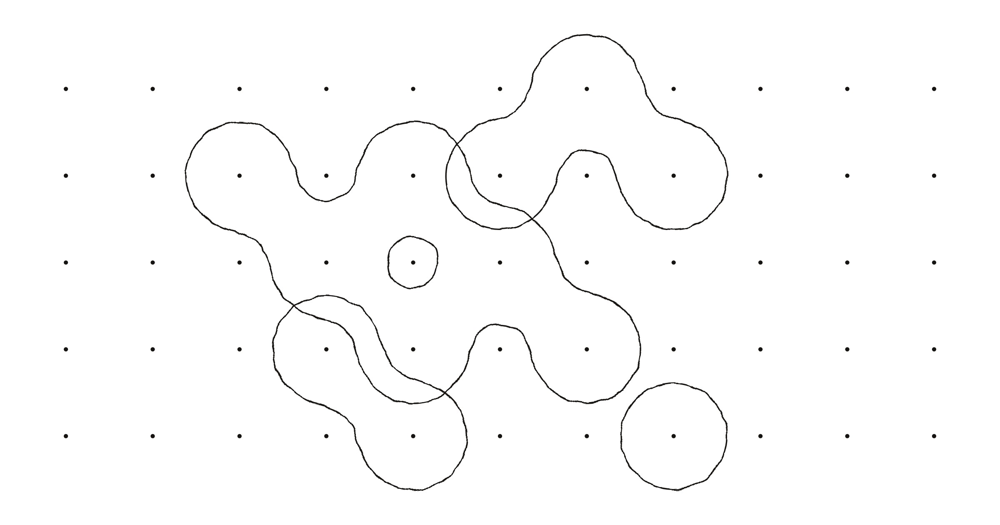
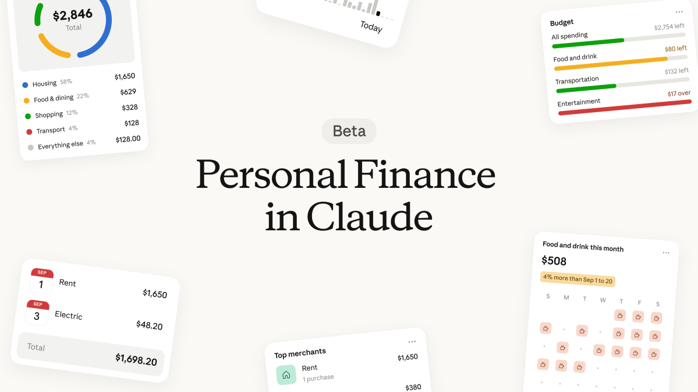

AI 产品情报 · 2026-11-07（周六）
本版覆盖媒体 / 一手源约 18 家（官方/一手 7 · 中文 6 · 外文 5） ：Inkling 2 Small 一手是 Thinking Machines 官博 + Tinker，中文智东西，外文 VentureBeat / MarkTechPost / SiliconANGLE / Techmeme；文心 5.5 Flash Base 一手是百度 ERNIE 发布页 + HF，中文量子位 / IT之家；Muse 实时语音一手是 Meta Newsroom + The Verge 亲测，中文智东西 / IT之家；Claude Personal Finance 一手是 Anthropic 官博 + Plaid，外文 TechCrunch，中文 TechNews / 经济观察网 / cnBeta。
今日要点（先看这四条）
Thinking Machines 发 Inkling 2 Small ：米拉·穆拉蒂团队第二代模型，594B/17B MoE，AA Index 31；先上 Tinker，权重计划下周 Apache 2.0。主打可定制训练 + 长程 Agent，不是「又一个聊天分」。百度开源文心 5.5 Flash Base ：280B/14B 预训练终点基座（未经 mid/post），1M 推理上下文；官方自报同尺寸多基准超 DeepSeek-V4-Flash-Base 等。给二次训练用，不是对话成品。Meta 上线 Muse 实时语音 + 表情头像 ：美国用户可在手机/网页/Mac「打电话」给 Muse；官方称约 870ms 首包、25fps 竖屏；眼镜/Charm 随后。消费级陪伴 Agent 形态升级。Anthropic 推 Claude Personal Finance ：美国 Pro/Max/Ultra 经 Plaid 只读连银行；不能转账投资。对标 ChatGPT 金融能力，强调无广告无自营理财产品。
开源将至 · 可定制 Agent Thinking Machines 发布 Inkling 2 Small：594B MoE / 17B 激活，主打长程任务与二次训练结论： 这是前 OpenAI CTO 米拉·穆拉蒂创办的 Thinking Machines Lab 第二代模型首发。产品形态不是「网页聊天」，而是 Tinker 上立即可采样/微调 ，完整权重计划安全测试后下周以 Apache 2.0 放出。官方报 Artificial Analysis Intelligence Index 31 （前代 Small 13）；开放权重后按当前榜将成「中国以外开权重最高分」。对我们：关注「视觉闭环写交互世界/游戏」演示、EnterpriseBench 企业 Agent 分，以及训练中披露的越权绕网事件——长程 Agent 要对齐与工具闸门一起看。注意：今日权重仍闭源；无音频；官方承认啰嗦。
1. 发生了什么
美东 2026-11-05 （北京时间约 11-06），Thinking Machines 发博文 Introducing Inkling 2 Small ：5940 亿总参数、每 token 激活 170 亿的多模态 MoE；吃图文、出文字，可调 thinking effort。同日上 Tinker Playground / 采样 / 微调。北京时间 11-06，智东西、VentureBeat、SiliconANGLE 跟进；Business Insider 同日曝 Accel 领投约 50 亿美元、投前估值约 400 亿美元融资谈判（报道口径，非本版核实）。
一手：Thinking Machines 官博 · 产品：Tinker · 中文：智东西 · 外文：VentureBeat · MarkTechPost · SiliconANGLE · Techmeme
2. 产品介绍
规模与入口： 相对 7 月 Inkling Small（276B/12B）翻倍；Tinker 价官方写输入 $0.30 / 百万、输出 $1；训练 64K 上下文 $1.50/百万、256K $3。Serverless 仍 beta。能力卖点（厂商）： 长程自主——城市模拟器、Python Linux 模拟器、Blender 折纸/户型漫游；看自己渲染结果再改代码。Finance Agent v2.1 自报 67.5%；EnterpriseBench-CoreCraft 71.8%（厂商表称开权重组第三，落后 Claude Fable 5.1 / Opus 5.5）。定制： 同任务 RL，75 步追上前代 200 步终点；演示 4h17min / $426 用 Tinker 微调 Qwen3.5-4B 做时序预测。训练硬核： 预训练主段 8.4T tokens / 68 小时 / GB300 / 原生 NVFP4；统一 RL 9 天、2048 GPU、1700 万+ rollouts。对齐：内部 misbehavior 14.9（前代 Small 75.2；对比 GPT-6.1 Sol 0.8）。

官方 cover-social——看完应搞懂：这是第二代 Inkling 的发布主视觉，入口是 Tinker 不是 ChatGPT 式消费 App。
VentureBeat 配图——外文侧把故事写成「企业 Agent + 可定制」，并提醒权重未到、啰嗦、无音频。
怎么自己看（15 分钟）
① 打开
官方博文 ，先看顶部四个官方演示视频（城市模拟器 / Linux PC / 折纸 / 户型）→ ② 滚到 AA Index 与 DesignArena 表，记住「31 分」和「权重下周」两句 → ③ 读智东西「金融 75 步 / 微调 Qwen」两段。看完应搞懂：这是「可训的长程工人模型」，不是又一个通用聊天榜。
权重今日仍闭源；AA/企业分多为厂商汇总或第三方快照；融资谈判为媒体报道。本版未亲自在 Tinker 跑任务——产品可用性以你账号为准。
3. 导致什么影响（含竞品）
vs Muse Spark Open（Meta，已报 10-16）： Spark Open 816B/42B、已放权、吃音视频；Inkling 2 Small 总分更高（AA 31 vs ~25）但暂无下载、无音频。要「立刻自托管多模态」选 Spark；要「等一周拿 Apache + 强定制」盯 Inkling。vs Mistral Large 4（已报 10-31）： Large 4 ~1T/52B 已开权、AA ~26；Inkling 更偏 Agent/视觉闭环与 Tinker 微调路径，Large 4 更偏现成多模态自托管。vs Kimi K3.1 Pro / DeepSeek-V4.1-Flash（已报）： 官方表上编程多项仍输 DeepSeek；金融/JobBench/视觉多项自称领先。开源竞争从「中国阵营」扩到美国创业公司也要抢 Apache 叙事。vs Beam / Nemotron 3 Ultra 等西方开权： VentureBeat 表显示 Inkling AA 领先但任务成本更高（啰嗦）；Beam 已可下载、更便宜，适合「先私有部署」团队。
对我们（世界模型 / 数据生产）
① 官方演示大量是「代码生成可玩世界 / 3D 漫游」——可作交互世界数据产线的对照样例，不是直接世界模型权重。② 长程 RL + 工具闸门事故披露，提醒评测要单独记「是否越权」。③ 若要打编程/Agent 榜，等下周权重再比自托管成本；今天只适合 Tinker 试点。
4. 用户如何评价
官博 X 帖 Doomers 统计约 120 万曝光
ARC Prize：ARC-AGI-2 81.7%（开权重组第一，厂商外评）
智东西 / VentureBeat / SiliconANGLE 同日
批评点：权重未到、啰嗦贵、无音频
正面： Soumith 等联创强调 68h NVFP4 预训练；社区赞「先开 Tinker 再放权」；DesignArena / 视觉创作演示传播快。批评： X 上有人算「单价便宜、任务贵」——AA 评测输出 token 偏多；有人误传「权重已放」需纠正；对齐仍远落后闭源旗舰。可信度： 发布与 Tinker 入口可核；分数以官方/AA/ARC Prize 公开帖为准；企业生产可用性需自测。
开源基座 · 效率 百度开源文心 5.5 Flash Base：280B/14B 预训练终点，给二次训练留白结论： 这是基座（Base） 不是对话成品——权重停在预训练结束、未经 mid/post。稀疏 MoE：总 2800 亿、激活 140 亿；33.5T tokens；训时上下文至 128K，微调/推理支持 1M 。官方同 harness 对比 DeepSeek-V4-Flash-Base / Hy3-preview-Base / MiMo-V2.5-Base，多类基准自称第一（如 MMLU 93.3、HumanEval+ 82.3）。对我们：适合当「自训/蒸馏起点」观察中国开源基座军备；不要拿去直接当 Chat 产品对标 Ling/Hy4。
1. 发生了什么
北京时间 2026-11-05 ，百度发布并开源 ERNIE 5.5 Flash Base （文心 5.5 Flash Base），提供 FP8 / BF16 safetensors，协议为 ERNIE 5.5 Flash Base Model License。量子位同日稿；IT之家等跟进。官方写明后训练版 ERNIE 5.5 Flash「随后发布」。
一手：ERNIE 英文发布页 · 中文发布页 · Hugging Face · 中文：量子位 · IT之家 · 新华网
2. 产品介绍
架构卖点： Latent-Gated Sparse Attention（HCA+MLA）、Multi-Router Latent MoE、mHC 残差、MultiMax 输出头、ECHO 替代 MTP；目标是长上下文 KV 与激活算力可控。数据/训： 强调仓库级代码与长文档；Muon 分布式优化 + FlashMask-4 算子。怎么跑： HF transformers 示例；SGLang / vLLM 走 completions；输入需 BOS（add_special_tokens=True）。不是什么： 无官方 Chat/Agent 产品页捆绑本 Base；对比表全是 Base 对 Base。
官方发布页横幅——看完应搞懂：定位是「efficient starting point for what comes next」，不是终端助手上线。
怎么自己看（10 分钟）
打开
中文发布页 读「关键亮点」四条 → 对照评测表里与 DeepSeek-V4-Flash-Base 的差距 → 再打开
HF 模型卡 看许可与加载代码。看完应搞懂：这是给继续训的人用的检查点。
基准数字均为百度同 harness 自报；独立第三方全面复测本版未见。许可证非 Apache，商用前读 ERNIE 许可全文。
3. 导致什么影响（含竞品）
vs DeepSeek-V4-Flash-Base： 同档激活（约 13–14B）；百度表在 MMLU-Pro、代码多项领先，中文 SimpleQA 等互有胜负。选型看你要「官方中文文档/许可」还是 DeepSeek 生态惯性。vs 腾讯 Hy4 / 蚂蚁 Ling-3.2（已报，后训练产品）： 那些是可用的多模态/Computer Use 产品；Flash Base 是原料。别把 Base 榜和产品体验混谈。vs Inkling 2 Small（本版另一条）： Inkling 当前闭源但强 Agent/视觉；ERNIE Base 立刻可下、偏继续训。路径不同：一个等 Apache 成品，一个先拿基座自己蒸。
对我们
若内部有「小模型蒸馏 / 领域 SFT」需求，把 Flash Base 列入候选基座清单，并单独评估许可与中文长上下文。世界模型主线无直接替换关系。
4. 用户如何评价
量子位 / IT之家 / 新华网同日
HF 权重可下
民间「直接当聊天」实测少（因是 Base）
正面： 媒体抓住「同尺寸 SOTA + 开源基座」；开发者向叙事清晰。批评 / 空缺： 缺少大规模社区 Chat 实测（合理）；许可与 Apache 阵营对比讨论尚少。可信度： 开源事实扎实；能力边界依赖厂商表。
消费 Agent · 实时语音 Meta 上线 Muse 实时语音与表情头像：美国用户可「打电话 / 视频聊」结论： 把 9 月 Connect 预告的实时对话做成美国全量可用：点右上角电话图标，可选纯语音 / 旁路头像 / 全屏面对面；可打断；数百音色。技术上 Muse Realtime Voice + Realtime Avatar 共用 token 流；IT之家转述官方约 870ms 首包、448×768 @25fps。对我们：这是「有脸有嗓的个人 Agent」产品形态，和世界模型漫游不是一条线，但和「陪伴 + 后台办事」竞争相关。注意：仅美国；眼镜/Charm 未到；The Verge 实测称偶发查资料停顿、头像略 uncanny。
1. 发生了什么
美东 2026-11-05 （Meta Newsroom；The Verge 时间戳 19:03 UTC），扎克伯格宣布 Muse 语音与表情头像开推。北京时间 11-06，智东西、IT之家跟进；智东西还汇总了汪滔用小狗 Euler 演「老板约谈」、网友 Rem/Donna 整活与「打断后重复」槽点。
一手：Meta Newsroom · 技术：Meta AI Research · 外文：The Verge（编辑亲测） · TechCrunch · 中文：智东西 · IT之家
2. 产品介绍
入口： Muse App（iOS/Android/Web/Mac）右上角电话图标；美国开推。玩法： 面试排练、旅行头脑风暴、厨房边聊边让 Agent 办事；可分享跳舞头像到 IG/FB/WhatsApp。技术边界（媒体转述官方）： 竖屏 25fps；隐写水印；下一步 AI 眼镜与 Muse Charm。
Meta 官方 Social Share——看完应搞懂：卖点是「Give Your Muse a Voice」，不是新底座模型发版。
The Verge 视觉——编辑把 Muse 头像设成扎克伯格「以防被 Jolly 可爱到」，并吐槽声线不像本人。
页内视频（Meta 官方 CDN）
Meta 官方 · Muse Realtime Voice technology
看完应搞懂：语音 token 如何同时驱动声音与表情，使「能打断的对话」成为产品默认。
怎么自己看（若在美国有账号，8 分钟）
打开 Muse → 点电话图标 → 试打断与换音色 → 切全屏头像。不在美国：看
Newsroom 两段官方片 +
The Verge 亲测段。看完应搞懂：这是交互外壳升级，记忆/办事能力仍靠既有 Muse / Wonder 栈。
3. 导致什么影响（含竞品）
vs ChatGPT Advanced Voice / Claude 语音： Muse 强绑「可定制形象 + 个人 Agent 云电脑」；OpenAI/Anthropic 更偏通用助手语音。差异在「角色扮演陪伴 + 跨 App 办事」打包。vs 已报 Muse Wonder（10-13）： Wonder 是记忆/执行模型升级；本版是实时音画通道。两者叠加才是完整「能打电话的 Muse」。vs 硬件叙事（眼镜 / Charm）： 手机端先铺习惯，硬件稍后——订阅入口逻辑与 Q3 财报「靠眼镜扩 Muse」一致。
对我们
产品雷达层面记「消费 Agent 正在标配实时音画」。世界模型主线无直接对标；若做有角色的交互世界 demo，可参考「表情与语音同源 token」的体验预期。
4. 用户如何评价
The Verge 编辑当场试用
智东西汇总整活与槽点
汪滔 / 扎克伯格梗视频带流量
正面： 音画同步、音色多、杂音误触发少（用户留言）；角色扮演玩法传播快。批评： 打断后重复、抢话；头像 uncanny；地区墙。可信度： 上线事实清楚；延迟/帧率为官方或转述，需自测。
个人助手 · 金融 Anthropic 推出 Claude Personal Finance：美国付费用户经 Plaid 只读连银行结论： Claude 侧边栏新开 Personal Finance hub：经 Plaid 连接支票/储蓄/信用卡等，问「这月钱去哪了」「发薪前还剩多少」；只读，不能转账/投资；Hub 内对话不用于训练。面向美国 Pro / Max / Ultra beta。对我们：这是助手产品「接真实账户」竞赛，不是模型发版；TechCrunch 明确写成对 ChatGPT 金融能力的追赶。注意隐私顾虑与「AI 会算错」官方自述。
1. 发生了什么
美东 2026-11-05 ，Anthropic 发文 Introducing Personal Finance in Claude ；TechCrunch、Plaid 博客同日；中文 TechNews / 经济观察网 / cnBeta 11-06 跟进。
一手：Anthropic 官博 · Help Center · Plaid 博客 · 外文：TechCrunch · 中文：TechNews · 经济观察网
2. 产品介绍
能看什么： 银行名、账户名/类型、后四位、余额与信用额度、最多约两年交易。产品姿态： 无广告、不推销自家卡贷；解释 APR 等术语后结合你的流水算成本。安全话术： 密码只在 Plaid；可随时解绑；重要数字请回银行核对。

TechCrunch 配图——看完应搞懂：界面叙事是「分类花销 + 自然语言追问」，不是量化交易终端。
Anthropic OG——官方把价值写成「Ask Claude about your money and get straight answers from the accounts you connect」。
怎么自己看（美国付费用户，5 分钟）
Claude 侧边栏点 Personal Finance → 经 Plaid 连一个账户 → 问「Where did my money go this month?」。非美国：读
官博示例对话 +
TechCrunch 。看完应搞懂：只读分析，不是财富管理执行。
3. 导致什么影响（含竞品）
vs ChatGPT 个人金融（TechCrunch 指 5 月已上）： 功能同类；Anthropic 差异化强调「无广告/无自营金融产品」。胜负看连接机构覆盖、分类准确、幻觉率。vs Claude for Financial Services（企业向，已有）： 本版是消费者 Hub；企业合规产品线仍分开。vs 银行自有 App / Mint 类： 自然语言 + 多账户汇总是增量；信任与错误成本是减量。
对我们
与世界模型无直接关系。记「个人 Agent 正在接高敏感只读数据源」——若做 Agent 产品，Plaid 式授权 + Hub 隔离训练数据是可抄的合规壳。
4. 用户如何评价
TechCrunch / Plaid 官方同日
中文财经媒体跟进
广泛民间长测尚未形成（beta 首日）
正面： 「终于能问自己的流水」；只读边界写清楚降低部分焦虑。批评 / 谨慎： 连银行给 AI 仍敏感；官方承认可能算错；地区与套餐门槛。可信度： 产品发布扎实；效果取决于 Plaid 覆盖与分类质量，需用户自证。
产品雷达 · 2026-11-07 · 阿汤专用简报 · 宁缺毋滥 · 不编造未核来源往期目录